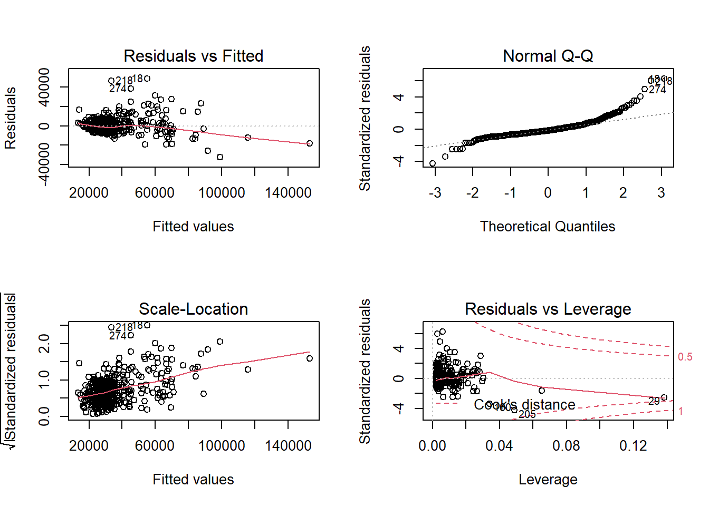
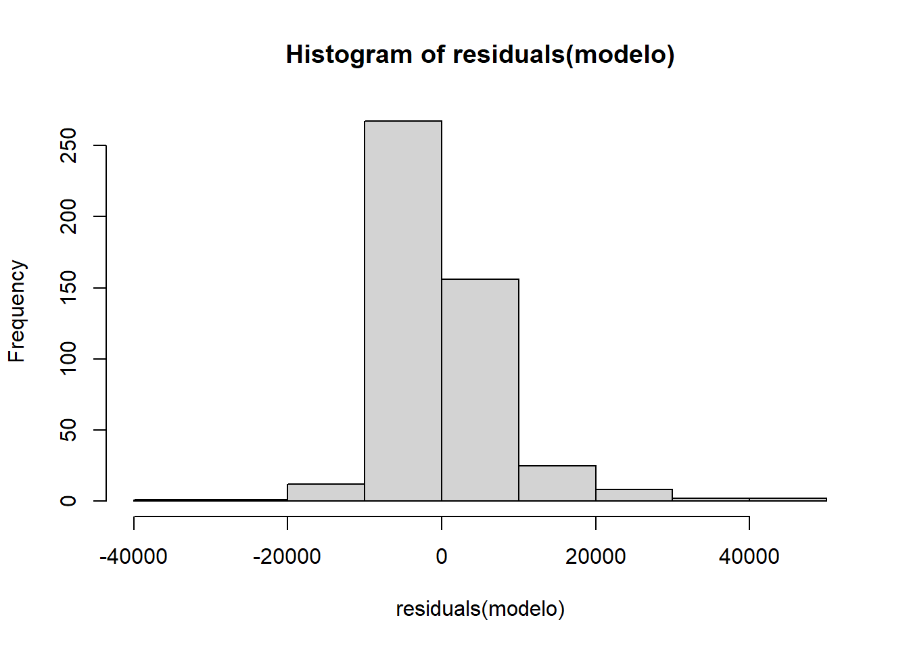
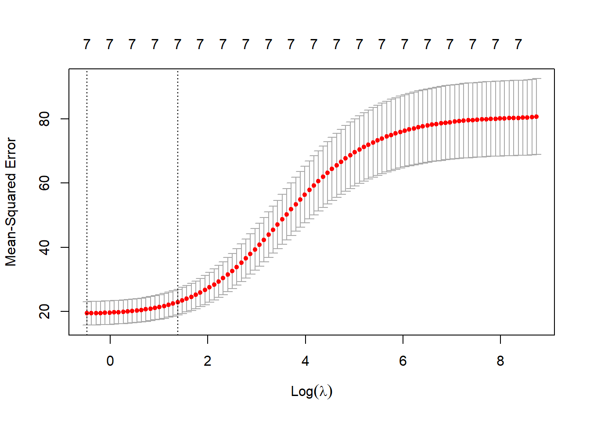
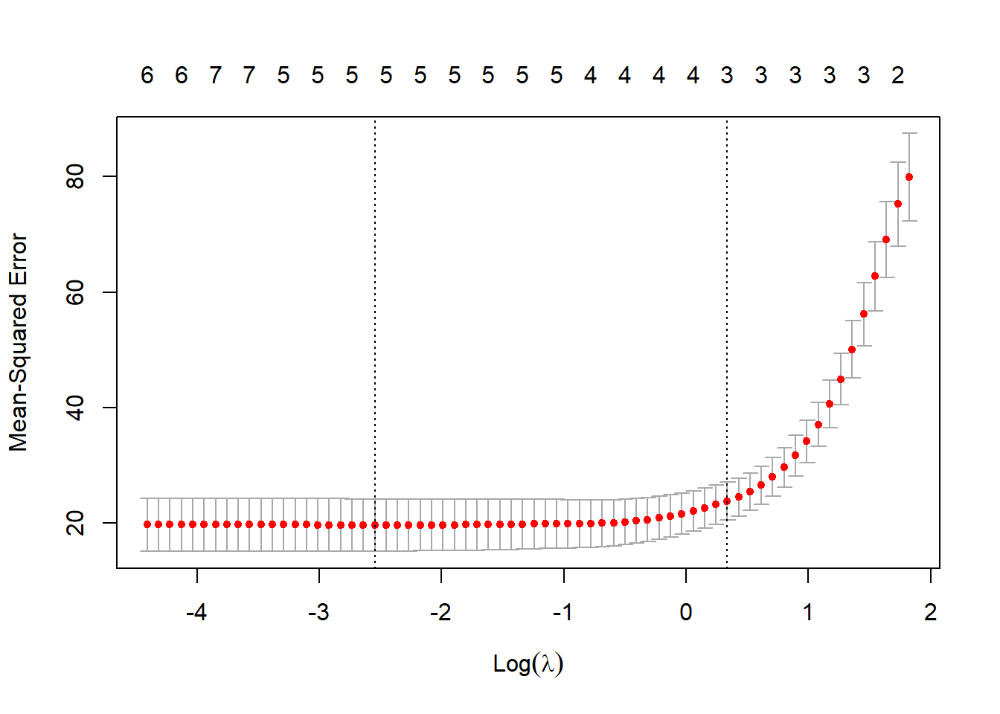

Capítulo 8 Modelos lineales
Suponen que la función de regresión es lineal:
\[Y=\beta_{0}+\beta_{1}X_{1}+\beta_{2}X_{2}+\cdots+\beta_{p}X_{p}+\varepsilon\]
El efecto de las variables explicativas sobre la respuesta es simple (proporcional a su valor).
8.1 Ejemplo
El fichero hatco.RData contiene observaciones de clientes de la compañía de distribución industrial (Compañía Hair, Anderson y Tatham). Las variables se pueden clasificar en tres grupos:
load('datos/hatco.RData')
as.data.frame(attr(hatco, "variable.labels"))## attr(hatco, "variable.labels")
## empresa Empresa
## tamano Tamaño de la empresa
## adquisic Estructura de adquisición
## tindustr Tipo de industria
## tsitcomp Tipo de situación de compra
## velocida Velocidad de entrega
## precio Nivel de precios
## flexprec Flexibilidad de precios
## imgfabri Imagen del fabricante
## servconj Servicio conjunto
## imgfvent Imagen de fuerza de ventas
## calidadp Calidad de producto
## fidelida Porcentaje de compra a HATCO
## satisfac Satisfacción global
## nfidelid Nivel de compra a HATCO
## nsatisfa Nivel de satisfacciónConsideraremos como respuesta la variable fidelida y como variables explicativas el resto de variables continuas menos satisfac.
datos <- hatco[, 6:13] # Nota: realmente no copia el objeto...
plot(datos)
# cor(datos, use = "complete") # Por defecto 8 decimales...
print(cor(datos, use = "complete"), digits = 2)## velocida precio flexprec imgfabri servconj imgfvent calidadp fidelida
## velocida 1.000 -0.354 0.519 0.049 0.609 0.081 -0.490 0.674
## precio -0.354 1.000 -0.486 0.272 0.511 0.189 0.468 0.077
## flexprec 0.519 -0.486 1.000 -0.115 0.075 -0.038 -0.445 0.578
## imgfabri 0.049 0.272 -0.115 1.000 0.298 0.790 0.199 0.224
## servconj 0.609 0.511 0.075 0.298 1.000 0.246 -0.062 0.698
## imgfvent 0.081 0.189 -0.038 0.790 0.246 1.000 0.181 0.267
## calidadp -0.490 0.468 -0.445 0.199 -0.062 0.181 1.000 -0.204
## fidelida 0.674 0.077 0.578 0.224 0.698 0.267 -0.204 1.0008.2 Ajuste: función lm
Para el ajuste (estimación de los parámetros) de un modelo lineal a un conjunto de datos (por mínimos cuadrados) se emplea la función lm:
ajuste <- lm(formula, datos, seleccion, pesos, na.action)formulafórmula que especifica el modelo.datosdata.frame opcional con las variables de la formula.seleccionespecificación opcional de un subconjunto de observaciones.pesosvector opcional de pesos (WLS).na.actionopción para manejar los datos faltantes (na.omit).
modelo <- lm(fidelida ~ servconj, datos)
modelo##
## Call:
## lm(formula = fidelida ~ servconj, data = datos)
##
## Coefficients:
## (Intercept) servconj
## 21.98 8.30Al imprimir el ajuste resultante se muestra un pequeño resumen del ajuste (aunque el objeto que contiene los resultados es una lista).
Para obtener un resumen más completo se puede utilizar la función summary().
summary(modelo)##
## Call:
## lm(formula = fidelida ~ servconj, data = datos)
##
## Residuals:
## Min 1Q Median 3Q Max
## -14.1956 -4.0655 0.2944 4.5945 11.9744
##
## Coefficients:
## Estimate Std. Error t value Pr(>|t|)
## (Intercept) 21.9754 2.6086 8.424 3.34e-13 ***
## servconj 8.3000 0.8645 9.601 9.76e-16 ***
## ---
## Signif. codes: 0 '***' 0.001 '**' 0.01 '*' 0.05 '.' 0.1 ' ' 1
##
## Residual standard error: 6.432 on 97 degrees of freedom
## (1 observation deleted due to missingness)
## Multiple R-squared: 0.4872, Adjusted R-squared: 0.482
## F-statistic: 92.17 on 1 and 97 DF, p-value: 9.765e-16plot(fidelida ~ servconj, datos)
abline(modelo)
8.2.1 Extracción de información
Para la extracción de información se pueden acceder a los componentes del modelo ajustado o emplear funciones (genéricas). Algunas de las más utilizadas son las siguientes:
| Función | Descripción |
|---|---|
fitted |
valores ajustados |
coef |
coeficientes estimados (y errores estándar) |
confint |
intervalos de confianza para los coeficientes |
residuals |
residuos |
plot |
gráficos de diagnóstico |
termplot |
gráfico de efectos parciales |
anova |
calcula tablas de análisis de varianza (también permite comparar modelos) |
predict |
calcula predicciones para nuevos datos |
Ejemplo:
modelo2 <- lm(fidelida ~ servconj + flexprec, data = hatco)
summary(modelo2)##
## Call:
## lm(formula = fidelida ~ servconj + flexprec, data = hatco)
##
## Residuals:
## Min 1Q Median 3Q Max
## -10.2549 -2.2850 0.3411 3.3260 7.0853
##
## Coefficients:
## Estimate Std. Error t value Pr(>|t|)
## (Intercept) -3.4617 2.9734 -1.164 0.247
## servconj 7.8287 0.5897 13.276 <2e-16 ***
## flexprec 3.4017 0.3191 10.661 <2e-16 ***
## ---
## Signif. codes: 0 '***' 0.001 '**' 0.01 '*' 0.05 '.' 0.1 ' ' 1
##
## Residual standard error: 4.375 on 96 degrees of freedom
## (1 observation deleted due to missingness)
## Multiple R-squared: 0.7652, Adjusted R-squared: 0.7603
## F-statistic: 156.4 on 2 and 96 DF, p-value: < 2.2e-16confint(modelo2)## 2.5 % 97.5 %
## (Intercept) -9.363813 2.440344
## servconj 6.658219 8.999274
## flexprec 2.768333 4.035030anova(modelo2)## Analysis of Variance Table
##
## Response: fidelida
## Df Sum Sq Mean Sq F value Pr(>F)
## servconj 1 3813.6 3813.6 199.23 < 2.2e-16 ***
## flexprec 1 2175.6 2175.6 113.66 < 2.2e-16 ***
## Residuals 96 1837.6 19.1
## ---
## Signif. codes: 0 '***' 0.001 '**' 0.01 '*' 0.05 '.' 0.1 ' ' 1# anova(modelo2, modelo)
# termplot(modelo2, partial.resid = TRUE)Muchas de estas funciones genéricas son válidas para otros tipos de modelos (glm, …).
Algunas funciones como summary() devuelven información adicional:
res <- summary(modelo2)
names(res)## [1] "call" "terms" "residuals" "coefficients"
## [5] "aliased" "sigma" "df" "r.squared"
## [9] "adj.r.squared" "fstatistic" "cov.unscaled" "na.action"res$sigma## [1] 4.375074res$adj.r.squared## [1] 0.76032928.3 Predicción
Para calcular predicciones (estimaciones de la media condicionada) se puede emplear la función predict() (ejecutar help(predict.lm) para ver todas las opciones disponibles).
Por defecto obtiene las predicciones correspondientes a las observaciones (modelo$fitted.values). Para otros casos hay que emplear el argumento newdata:
- data.frame con los valores de (todas) las covariables, sus nombres deben coincidir con los originales.
Ejemplo:
valores <- 0:5
pred <- predict(modelo, newdata = data.frame(servconj = valores))
pred## 1 2 3 4 5 6
## 21.97544 30.27548 38.57552 46.87556 55.17560 63.47564plot(fidelida ~ servconj, datos)
lines(valores, pred)
Esta función también permite obtener intervalos de confianza y de predicción:
valores <- seq(0, 5, len = 100)
newdata <- data.frame(servconj = valores)
pred <- predict(modelo, newdata = newdata, interval = c("confidence"))
head(pred)## fit lwr upr
## 1 21.97544 16.79816 27.15272
## 2 22.39463 17.30126 27.48800
## 3 22.81383 17.80427 27.82338
## 4 23.23302 18.30718 28.15886
## 5 23.65221 18.80999 28.49444
## 6 24.07141 19.31269 28.83013plot(fidelida ~ servconj, datos)
matlines(valores, pred, lty = c(1, 2, 2), col = 1)
pred2 <- predict(modelo, newdata = newdata, interval = c("prediction"))
matlines(valores, pred2[, -1], lty = 3, col = 1)
legend("topleft", c("Ajuste", "Int. confianza", "Int. predicción"), lty = c(1, 2, 3))
8.4 Selección de variables explicativas
Cuando se dispone de un conjunto grande de posibles variables explicativas suele ser especialmente importante determinar cuales de estas deberían ser incluidas en el modelo de regresión. Si alguna de las variables no contiene información relevante sobre la respuesta no se debería incluir (se simplificaría la interpretación del modelo, aumentaría la precisión de la estimación y se evitarían problemas como la multicolinealidad). Se trataría entonces de conseguir un buen ajuste con el menor número de variables explicativas posible.
Para actualizar un modelo (p.e. eliminando o añadiendo variables) se puede emplear la función update:
modelo.completo <- lm(fidelida ~ . , data = datos)
summary(modelo.completo)##
## Call:
## lm(formula = fidelida ~ ., data = datos)
##
## Residuals:
## Min 1Q Median 3Q Max
## -13.3351 -2.0733 0.5224 2.9218 6.7106
##
## Coefficients:
## Estimate Std. Error t value Pr(>|t|)
## (Intercept) -9.5935 4.8213 -1.990 0.0496 *
## velocida -0.6023 1.9590 -0.307 0.7592
## precio -1.0771 2.0283 -0.531 0.5967
## flexprec 3.4616 0.3997 8.660 1.62e-13 ***
## imgfabri -0.1735 0.6472 -0.268 0.7892
## servconj 9.0919 3.8023 2.391 0.0189 *
## imgfvent 1.5596 0.9221 1.691 0.0942 .
## calidadp 0.4874 0.3451 1.412 0.1613
## ---
## Signif. codes: 0 '***' 0.001 '**' 0.01 '*' 0.05 '.' 0.1 ' ' 1
##
## Residual standard error: 4.281 on 91 degrees of freedom
## (1 observation deleted due to missingness)
## Multiple R-squared: 0.7869, Adjusted R-squared: 0.7705
## F-statistic: 48 on 7 and 91 DF, p-value: < 2.2e-16modelo.reducido <- update(modelo.completo, . ~ . - imgfabri)
summary(modelo.reducido)##
## Call:
## lm(formula = fidelida ~ velocida + precio + flexprec + servconj +
## imgfvent + calidadp, data = datos)
##
## Residuals:
## Min 1Q Median 3Q Max
## -13.2195 -2.0022 0.4724 2.9514 6.8328
##
## Coefficients:
## Estimate Std. Error t value Pr(>|t|)
## (Intercept) -9.9900 4.5656 -2.188 0.0312 *
## velocida -0.5207 1.9254 -0.270 0.7874
## precio -1.0017 1.9986 -0.501 0.6174
## flexprec 3.4709 0.3962 8.761 9.23e-14 ***
## servconj 8.9111 3.7230 2.394 0.0187 *
## imgfvent 1.3699 0.5883 2.329 0.0221 *
## calidadp 0.4844 0.3432 1.411 0.1615
## ---
## Signif. codes: 0 '***' 0.001 '**' 0.01 '*' 0.05 '.' 0.1 ' ' 1
##
## Residual standard error: 4.26 on 92 degrees of freedom
## (1 observation deleted due to missingness)
## Multiple R-squared: 0.7867, Adjusted R-squared: 0.7728
## F-statistic: 56.56 on 6 and 92 DF, p-value: < 2.2e-16Para obtener el modelo “óptimo” lo ideal sería evaluar todos los modelos posibles.
8.4.1 Búsqueda exhaustiva
La función regsubsets del paquete leaps permite seleccionar los mejores modelos
fijando el número de variables explicativas.
Por defecto, evalúa todos los modelos posibles con un determinado número de
parámetros (variando desde 1 hasta un máximo de nvmax=8)
y selecciona el mejor (nbest=1).
library(leaps)## Warning: package 'leaps' was built under R version 4.1.1res <- regsubsets(fidelida ~ . , data = datos)
summary(res)## Subset selection object
## Call: regsubsets.formula(fidelida ~ ., data = datos)
## 7 Variables (and intercept)
## Forced in Forced out
## velocida FALSE FALSE
## precio FALSE FALSE
## flexprec FALSE FALSE
## imgfabri FALSE FALSE
## servconj FALSE FALSE
## imgfvent FALSE FALSE
## calidadp FALSE FALSE
## 1 subsets of each size up to 7
## Selection Algorithm: exhaustive
## velocida precio flexprec imgfabri servconj imgfvent calidadp
## 1 ( 1 ) " " " " " " " " "*" " " " "
## 2 ( 1 ) " " " " "*" " " "*" " " " "
## 3 ( 1 ) " " " " "*" " " "*" "*" " "
## 4 ( 1 ) " " " " "*" " " "*" "*" "*"
## 5 ( 1 ) " " "*" "*" " " "*" "*" "*"
## 6 ( 1 ) "*" "*" "*" " " "*" "*" "*"
## 7 ( 1 ) "*" "*" "*" "*" "*" "*" "*"# names(summary(res))Al representar el resultado se obtiene un gráfico con los mejores modelos ordenados
según el criterio determinado por el argumento scale = c("bic", "Cp", "adjr2", "r2").
Por ejemplo, en este caso, empleando el coeficiente de determinación ajustado, obtendríamos:
plot(res, scale = "adjr2")
En este caso (considerando que una mejora del 2% no es significativa), el modelo resultante sería:
lm(fidelida ~ servconj + flexprec, data = hatco)##
## Call:
## lm(formula = fidelida ~ servconj + flexprec, data = hatco)
##
## Coefficients:
## (Intercept) servconj flexprec
## -3.462 7.829 3.402Notas:
Si se emplea alguno de los criterios habituales, el mejor modelo con un determinado número de variables no depende del criterio empleado. Pero estos criterios pueden diferir al comparar modelos con distinto número de variables explicativas.
Si el número de variables explicativas es grande, en lugar de emplear una búsqueda exhaustiva se puede emplear un criterio por pasos, mediante el argumento
method = c("backward", "forward", "seqrep"), pero puede ser recomendable emplear el paqueteMASSpara obtener directamente el modelo final.
8.4.2 Selección por pasos
Si el número de variables es grande (no sería práctico evaluar todas las posibilidades) se suele utilizar alguno (o varios) de los siguientes métodos:
Selección progresiva (forward): Se parte de una situación en la que no hay ninguna variable y en cada paso se incluye una aplicando un criterio de entrada (hasta que ninguna de las restantes lo verifican).
Eliminación progresiva (backward): Se parte del modelo con todas las variables y en cada paso se elimina una aplicando un criterio de salida (hasta que ninguna de las incluidas lo verifican).
Regresión paso a paso (stepwise): El más utilizado, se combina un criterio de entrada y uno de salida. Normalmente se parte sin ninguna variable y en cada paso puede haber una inclusión y una exclusión (forward/backward).
La función stepAIC del paquete MASS permite seleccionar el modelo por pasos,
hacia delante o hacia atrás según criterio AIC o BIC (también esta disponible una función step del paquete base stats con menos opciones).
La función stepwise del paquete RcmdrMisc es una interfaz de stepAIC
que facilita su uso:
library(MASS)
library(RcmdrMisc)## Warning: package 'RcmdrMisc' was built under R version 4.1.1modelo <- stepwise(modelo.completo, direction = "forward/backward", criterion = "BIC")##
## Direction: forward/backward
## Criterion: BIC
##
## Start: AIC=437.24
## fidelida ~ 1
##
## Df Sum of Sq RSS AIC
## + servconj 1 3813.6 4013.2 375.71
## + velocida 1 3558.5 4268.2 381.81
## + flexprec 1 2615.5 5211.3 401.57
## + imgfvent 1 556.9 7269.9 434.53
## + imgfabri 1 394.2 7432.5 436.72
## <none> 7826.8 437.24
## + calidadp 1 325.8 7501.0 437.63
## + precio 1 46.2 7780.6 441.25
##
## Step: AIC=375.71
## fidelida ~ servconj
##
## Df Sum of Sq RSS AIC
## + flexprec 1 2175.6 1837.6 302.97
## + precio 1 831.5 3181.7 357.32
## + velocida 1 772.3 3240.9 359.15
## + calidadp 1 203.8 3809.4 375.15
## <none> 4013.2 375.71
## + imgfvent 1 74.8 3938.4 378.44
## + imgfabri 1 2.3 4010.9 380.25
## - servconj 1 3813.6 7826.8 437.24
##
## Step: AIC=302.97
## fidelida ~ servconj + flexprec
##
## Df Sum of Sq RSS AIC
## + imgfvent 1 129.8 1707.7 300.31
## <none> 1837.6 302.97
## + imgfabri 1 69.3 1768.3 303.76
## + calidadp 1 50.7 1786.9 304.80
## + precio 1 0.2 1837.4 307.56
## + velocida 1 0.0 1837.5 307.57
## - flexprec 1 2175.6 4013.2 375.71
## - servconj 1 3373.7 5211.3 401.57
##
## Step: AIC=300.31
## fidelida ~ servconj + flexprec + imgfvent
##
## Df Sum of Sq RSS AIC
## <none> 1707.7 300.31
## - imgfvent 1 129.82 1837.6 302.97
## + calidadp 1 24.70 1683.0 303.47
## + precio 1 0.96 1706.8 304.85
## + imgfabri 1 0.66 1707.1 304.87
## + velocida 1 0.41 1707.3 304.88
## - flexprec 1 2230.67 3938.4 378.44
## - servconj 1 2850.14 4557.9 392.91summary(modelo)##
## Call:
## lm(formula = fidelida ~ servconj + flexprec + imgfvent, data = datos)
##
## Residuals:
## Min 1Q Median 3Q Max
## -12.9301 -2.1395 0.0695 2.9632 7.4286
##
## Coefficients:
## Estimate Std. Error t value Pr(>|t|)
## (Intercept) -6.7761 3.1343 -2.162 0.0331 *
## servconj 7.4320 0.5902 12.592 <2e-16 ***
## flexprec 3.4503 0.3097 11.140 <2e-16 ***
## imgfvent 1.5369 0.5719 2.687 0.0085 **
## ---
## Signif. codes: 0 '***' 0.001 '**' 0.01 '*' 0.05 '.' 0.1 ' ' 1
##
## Residual standard error: 4.24 on 95 degrees of freedom
## (1 observation deleted due to missingness)
## Multiple R-squared: 0.7818, Adjusted R-squared: 0.7749
## F-statistic: 113.5 on 3 and 95 DF, p-value: < 2.2e-16Los métodos disponibles son "backward/forward", "forward/backward", "backward" y "forward".
Cuando el número de variables explicativas es muy grande (o si el tamaño de la muestra es pequeño en comparación) pueden aparecer problemas al emplear los métodos anteriores (incluso pueden no ser aplicables). Una alternativa son los métodos de regularización (Ridge regression, Lasso) disponibles en el paquete glmnet.
8.5 Regresión con variables categóricas
La función lm() admite también variables categóricas (factores), lo que equivaldría a modelos de análisis de la varianza o de la covarianza.
Como ejemplo, en el resto del tema emplearemos los datos de empleados:
load("datos/empleados.RData")
datos <- with(empleados, data.frame(lnsal = log(salario), lnsalini = log(salini), catlab, sexo))Al incluir variables categóricas la función lm() genera las variables indicadoras (variables dummy) que sean necesarias.
Por ejemplo, la función model.matrix() construye la denominada matriz de diseño \(X\) de un modelo lineal:
\[\mathbf{Y}=X\mathbf{\beta}+\mathbf{\varepsilon}\]
En el caso de una variable categórica, por defecto se toma la primera categoría como referencia y se generan variables indicadoras del resto de categorías:
X <- model.matrix(lnsal ~ catlab, datos)
head(X)## (Intercept) catlabSeguridad catlabDirectivo
## 1 1 0 1
## 2 1 0 0
## 3 1 0 0
## 4 1 0 0
## 5 1 0 0
## 6 1 0 0En el correspondiente ajuste (análisis de la varianza de un factor):
modelo <- lm(lnsal ~ catlab, datos)
summary(modelo)##
## Call:
## lm(formula = lnsal ~ catlab, data = datos)
##
## Residuals:
## Min 1Q Median 3Q Max
## -0.58352 -0.15983 -0.01012 0.13277 1.08725
##
## Coefficients:
## Estimate Std. Error t value Pr(>|t|)
## (Intercept) 10.20254 0.01280 797.245 < 2e-16 ***
## catlabSeguridad 0.13492 0.04864 2.774 0.00576 **
## catlabDirectivo 0.82709 0.02952 28.017 < 2e-16 ***
## ---
## Signif. codes: 0 '***' 0.001 '**' 0.01 '*' 0.05 '.' 0.1 ' ' 1
##
## Residual standard error: 0.2438 on 471 degrees of freedom
## Multiple R-squared: 0.625, Adjusted R-squared: 0.6234
## F-statistic: 392.6 on 2 and 471 DF, p-value: < 2.2e-16el nivel de referencia no tiene asociado un coeficiente (su efecto se corresponde con (Intercept)). Los coeficientes del resto de niveles miden el cambio que se produce en la media al cambiar desde la categoría de referencia (diferencias de efectos respecto al nivel de referencia).
Para contrastar el efecto de los factores, es preferible emplear la función anova:
modelo <- lm(lnsal ~ catlab + sexo, datos)
anova(modelo)## Analysis of Variance Table
##
## Response: lnsal
## Df Sum Sq Mean Sq F value Pr(>F)
## catlab 2 46.674 23.3372 489.59 < 2.2e-16 ***
## sexo 1 5.596 5.5965 117.41 < 2.2e-16 ***
## Residuals 470 22.404 0.0477
## ---
## Signif. codes: 0 '***' 0.001 '**' 0.01 '*' 0.05 '.' 0.1 ' ' 1Notas:
Para centrarse en las efectos de los factores, se puede emplear la función
aov(analysis of variance; ver tambiénmodel.tables()yTukeyHSD()). Esta función llama internamente alm()(utilizando la misma parametrización).Para utilizar distintas parametrizaciones de los efectos se puede emplear el argumento
contrasts = c("contr.treatment", "contr.poly")(verhelp(contrasts)).
8.6 Interacciones
Al emplear el operador + se considera que los efectos de las covariables son aditivos (independientes):
modelo <- lm(lnsal ~ lnsalini + catlab, datos)
anova(modelo)## Analysis of Variance Table
##
## Response: lnsal
## Df Sum Sq Mean Sq F value Pr(>F)
## lnsalini 1 58.668 58.668 1901.993 < 2.2e-16 ***
## catlab 2 1.509 0.755 24.465 7.808e-11 ***
## Residuals 470 14.497 0.031
## ---
## Signif. codes: 0 '***' 0.001 '**' 0.01 '*' 0.05 '.' 0.1 ' ' 1plot(lnsal ~ lnsalini, data = datos, pch = as.numeric(catlab), col = 'darkgray')
parest <- coef(modelo)
abline(a = parest[1], b = parest[2], lty = 1)
abline(a = parest[1] + parest[3], b = parest[2], lty = 2)
abline(a = parest[1] + parest[4], b = parest[2], lty = 3)
legend("bottomright", levels(datos$catlab), pch = 1:3, lty = 1:3)
Para especificar que el efecto de una covariable depende de otra (interacción),
se pueden emplear los operadores * ó :.
modelo2 <- lm(lnsal ~ lnsalini*catlab, datos)
summary(modelo2)##
## Call:
## lm(formula = lnsal ~ lnsalini * catlab, data = datos)
##
## Residuals:
## Min 1Q Median 3Q Max
## -0.37440 -0.11335 -0.00524 0.10459 0.97018
##
## Coefficients:
## Estimate Std. Error t value Pr(>|t|)
## (Intercept) 1.66865 0.43820 3.808 0.000159 ***
## lnsalini 0.89512 0.04595 19.479 < 2e-16 ***
## catlabSeguridad 8.31808 3.01827 2.756 0.006081 **
## catlabDirectivo 3.01268 0.79509 3.789 0.000171 ***
## lnsalini:catlabSeguridad -0.85864 0.31392 -2.735 0.006470 **
## lnsalini:catlabDirectivo -0.27713 0.07924 -3.497 0.000515 ***
## ---
## Signif. codes: 0 '***' 0.001 '**' 0.01 '*' 0.05 '.' 0.1 ' ' 1
##
## Residual standard error: 0.1727 on 468 degrees of freedom
## Multiple R-squared: 0.8131, Adjusted R-squared: 0.8111
## F-statistic: 407.3 on 5 and 468 DF, p-value: < 2.2e-16anova(modelo2)## Analysis of Variance Table
##
## Response: lnsal
## Df Sum Sq Mean Sq F value Pr(>F)
## lnsalini 1 58.668 58.668 1967.6294 < 2.2e-16 ***
## catlab 2 1.509 0.755 25.3090 3.658e-11 ***
## lnsalini:catlab 2 0.543 0.272 9.1097 0.0001315 ***
## Residuals 468 13.954 0.030
## ---
## Signif. codes: 0 '***' 0.001 '**' 0.01 '*' 0.05 '.' 0.1 ' ' 1En este caso las pendientes también varían dependiendo del nivel del factor:
plot(lnsal ~ lnsalini, data = datos, pch = as.numeric(catlab), col = 'darkgray')
parest <- coef(modelo2)
abline(a = parest[1], b = parest[2], lty = 1)
abline(a = parest[1] + parest[3], b = parest[2] + parest[5], lty = 2)
abline(a = parest[1] + parest[4], b = parest[2] + parest[6], lty = 3)
legend("bottomright", levels(datos$catlab), pch = 1:3, lty = 1:3)
Por ejemplo, empleando la fórmula lnsal ~ lnsalini:catlab se considerarían distintas pendientes pero el mismo término independiente.
8.7 Diagnosis del modelo
Las conclusiones obtenidas con este método se basan en las hipótesis básicas del modelo:
Linealidad.
Normalidad (y homogeneidad).
Homocedasticidad.
Independencia.
Ninguna de las variables explicativas es combinación lineal de las demás.
Si alguna de estas hipótesis no es cierta, las conclusiones obtenidas pueden no ser fiables, o incluso totalmente erróneas. En el caso de regresión múltiple es de especial interés el fenómeno de la multicolinealidad (o colinearidad) relacionado con la última de estas hipótesis.
En esta sección consideraremos como ejemplo el modelo:
modelo <- lm(salario ~ salini + expprev, data = empleados)
summary(modelo) ##
## Call:
## lm(formula = salario ~ salini + expprev, data = empleados)
##
## Residuals:
## Min 1Q Median 3Q Max
## -32263 -4219 -1332 2673 48571
##
## Coefficients:
## Estimate Std. Error t value Pr(>|t|)
## (Intercept) 3850.71760 900.63287 4.276 2.31e-05 ***
## salini 1.92291 0.04548 42.283 < 2e-16 ***
## expprev -22.44482 3.42240 -6.558 1.44e-10 ***
## ---
## Signif. codes: 0 '***' 0.001 '**' 0.01 '*' 0.05 '.' 0.1 ' ' 1
##
## Residual standard error: 7777 on 471 degrees of freedom
## Multiple R-squared: 0.7935, Adjusted R-squared: 0.7926
## F-statistic: 904.8 on 2 and 471 DF, p-value: < 2.2e-168.7.1 Gráficas básicas de diagnóstico
Con la función plot se pueden generar gráficos de interés para la diagnosis del modelo:
oldpar <- par( mfrow=c(2,2))
plot(modelo)
par(oldpar)Por defecto se muestran cuatro gráficos (ver help(plot.lm) para más detalles). El primero (residuos frente a predicciones) permite detectar falta de
linealidad o heterocedasticidad (o el efecto de un factor omitido: mala
especificación del modelo), lo ideal sería no observar ningún patrón.
El segundo gráfico (gráfico QQ), permite diagnosticar la normalidad, los puntos del deberían estar cerca de la diagonal.
El tercer gráfico de dispersión-nivel permite detectar heterocedasticidad y ayudar a seleccionar una transformación para corregirla (más adelante, en la sección Alternativas, se tratará este tema), la pendiente de los datos debería ser nula.
El último gráfico permite detectar valores atípicos o influyentes. Representa los residuos estandarizados en función del valor de influencia (a priori) o leverage (\(hii\) que depende de los valores de las variables explicativas, debería ser \(< 2(p+1)/2\)) y señala las observaciones atípicas (residuos fuera de [-2,2]) e influyentes a posteriori (estadístico de Cook >0.5 y >1).
Si las conclusiones obtenidas dependen en gran medida de una observación (normalmente atípica), esta se denomina influyente (a posteriori) y debe ser examinada con cuidado por el experimentador. Para recalcular el modelo sin una de las observaciones puede ser útil la función update:
# which.max(cooks.distance(modelo))
modelo2 <- update(modelo, data = empleados[-29, ])Si hay datos atípicos o influyentes, puede ser recomendable emplear regresión lineal robusta, por ejemplo mediante la función rlm del paquete MASS.
En el ejemplo anterior, se observa claramente heterogeneidad de varianzas y falta de normalidad. Aparentemente no hay observaciones influyentes (a posteriori) aunque si algún dato atípico.
8.7.2 Gráficos parciales de residuos
En regresión lineal múltiple, en lugar de generar gráficos de dispersión simple (p.e. gráficos de dispersión matriciales) para detectar problemas (falta de linealidad, …) y analizar los efectos de las variables explicativas, se pueden generar gráficos parciales de residuos, por ejemplo con el comando:
termplot(modelo, partial.resid = TRUE)Aunque puede ser preferible emplear las funciones crPlots ó avPlots del paquete car:
library(car)
crPlots(modelo)
# avPlots(modelo)Estas funciones permitirían además detectar puntos atípicos o influyentes
(mediante los argumentos id.method e id.n).
8.7.3 Estadísticos
Para obtener medidas de diagnosis o resúmenes numéricos de interés se pueden emplear las siguientes funciones:
| Función | Descripción |
|---|---|
| rstandard | residuos estandarizados |
| rstudent | residuos estudentizados (eliminados) |
| cooks.distance | valores del estadístico de Cook |
| influence | valores de influencia, cambios en coeficientes y varianza residual al eliminar cada dato. |
Ejecutar help(influence.measures) para ver un listado de medidas de diagnóstico adicionales.
Hay muchas herramientas adicionales disponibles en otros paquetes.
Por ejemplo, para la detección de multicolinealidad, se puede emplear la función
vif del paquete car para calcular los factores de inflación de varianza para
las variables del modelo:
# library(car)
vif(modelo)## salini expprev
## 1.002041 1.002041Valores grandes, por ejemplo > 10, indican la posible presencia de multicolinealidad.
Nota: Las tolerancias (proporciones de variabilidad no explicada por las demás covariables) se pueden calcular con 1/vif(modelo).
8.7.4 Contrastes
8.7.4.1 Normalidad
Para realizar el contraste de normalidad de Shapiro-Wilk se puede emplear:
shapiro.test(residuals(modelo))##
## Shapiro-Wilk normality test
##
## data: residuals(modelo)
## W = 0.85533, p-value < 2.2e-16hist(residuals(modelo))
8.7.4.2 Homocedasticidad
La librería lmtest proporciona herramientas adicionales para la diagnosis de modelos lineales, por ejemplo el test de Breusch-Pagan para heterocedasticidad:
library(lmtest)
bptest(modelo, studentize = FALSE)##
## Breusch-Pagan test
##
## data: modelo
## BP = 290.37, df = 2, p-value < 2.2e-16Si el p-valor es grande aceptaríamos que hay igualdad de varianzas.
8.7.4.3 Autocorrelación
Contraste de Durbin-Watson para detectar si hay correlación serial entre los errores:
dwtest(modelo, alternative= "two.sided")##
## Durbin-Watson test
##
## data: modelo
## DW = 1.8331, p-value = 0.06702
## alternative hypothesis: true autocorrelation is not 0Si el p-valor es pequeño rechazaríamos la hipótesis de independencia.
8.8 Métodos de regularización
[[Pasar a selección de variables explicativas?]]
Estos métodos emplean también un modelo lineal: \[Y=\beta_{0}+\beta_{1}X_{1}+\beta_{2}X_{2}+\cdots+\beta_{p}X_{p}+\varepsilon\]
En lugar de ajustarlo por mínimos cuadrados (estándar), minimizando: \[ RSS = \sum\limits_{i=1}^{n}\left( y_{i} - \beta_0 - \beta_1 x_{1i} - \cdots - \beta_p x_{pi} \right)^{2}\]
Se imponen restricciones adicionales a los parámetros que los “retraen” (shrink) hacia cero:
Produce una reducción en la varianza de predicción (a costa del sesgo).
En principio se consideran todas las variables explicativas.
Ridge regression
- Penalización cuadrática: \(RSS+\lambda\sum_{j=1}^{p}\beta_{j}^{2}\).
Lasso
Penalización en valor absoluto: \(RSS+\lambda\sum_{j=1}^{p}|\beta_{j}|\).
Normalmente asigna peso nulo a algunas variables (selección de variables).
El parámetro de penalización se selecciona por validación cruzada.
- Normalmente estandarizan las variables explicativas (coeficientes en la misma escala).
8.8.1 Datos
El fichero hatco.RData contiene observaciones de clientes de la compañía de distribución industrial (Compañía Hair, Anderson y Tatham). Las variables se pueden clasificar en tres grupos:
load('datos/hatco.RData')
as.data.frame(attr(hatco, "variable.labels"))## attr(hatco, "variable.labels")
## empresa Empresa
## tamano Tamaño de la empresa
## adquisic Estructura de adquisición
## tindustr Tipo de industria
## tsitcomp Tipo de situación de compra
## velocida Velocidad de entrega
## precio Nivel de precios
## flexprec Flexibilidad de precios
## imgfabri Imagen del fabricante
## servconj Servicio conjunto
## imgfvent Imagen de fuerza de ventas
## calidadp Calidad de producto
## fidelida Porcentaje de compra a HATCO
## satisfac Satisfacción global
## nfidelid Nivel de compra a HATCO
## nsatisfa Nivel de satisfacciónConsideraremos como respuesta la variable fidelida y como variables explicativas el resto de variables continuas menos satisfac.
library(glmnet)## Warning: package 'glmnet' was built under R version 4.1.1El paquete glmnet no emplea formulación de modelos, hay que establecer la respuesta
y y las variables explicativas x (se puede emplear la función model.matrix() para construir x,
la matriz de diseño, a partir de una fórmula).
En este caso, eliminamos también la última fila por tener datos faltantes:
x <- as.matrix(hatco[-100, 6:12])
y <- hatco$fidelida[-100]8.8.2 Ridge Regression
Ajustamos un modelo de regresión ridge con la función glmnet con alpha=0 (ridge penalty).
fit.ridge <- glmnet(x, y, alpha = 0)
plot(fit.ridge, xvar = "lambda", label = TRUE)Para seleccionar el parámetro de penalización por validación cruzada se puede emplear
la función cv.glmnet.
cv.ridge <- cv.glmnet(x, y, alpha = 0)
plot(cv.ridge)
En este caso el parámetro sería:
cv.ridge$lambda.1se## [1] 3.017977y el modelo resultante contiene todas las variables explicativas:
coef(cv.ridge)## 8 x 1 sparse Matrix of class "dgCMatrix"
## s1
## (Intercept) 3.3722695
## velocida 1.5991955
## precio 0.7512946
## flexprec 2.3818230
## imgfabri 0.2960322
## servconj 3.9127056
## imgfvent 1.1068114
## calidadp 0.10525018.8.3 Lasso
Ajustamos un modelo lasso también con la función glmnet (con la opción por defecto alpha=1, lasso penalty).
fit.lasso <- glmnet(x,y)
plot(fit.lasso, xvar = "lambda", label = TRUE)
Seleccionamos el parámetro de penalización por validación cruzada.
cv.lasso <- cv.glmnet(x,y)
plot(cv.lasso)
En este caso el modelo resultante solo contiene 4 variables explicativas:
coef(cv.lasso)## 8 x 1 sparse Matrix of class "dgCMatrix"
## s1
## (Intercept) 4.4757712
## velocida 0.1020531
## precio .
## flexprec 2.7202485
## imgfabri .
## servconj 6.4044378
## imgfvent 0.4651076
## calidadp .8.9 Alternativas
8.9.1 Transformación (modelos linealizables)
Cuando no se satisfacen los supuestos básicos se puede intentar
transformar los datos para corregir la falta de
linealidad, la heterocedasticidad y/o la falta de normalidad
(normalmente estas últimas “suelen ocurrir en la misma escala”).
Por ejemplo, la función boxcox del paquete MASS permite seleccionar la transformación de Box-Cox
más adecuada:
\[Y^{(\lambda)} =
\begin{cases}
\dfrac{Y^\lambda - 1}{\lambda} & \text{si } \lambda \neq 0 \\
\ln{(Y)} & \text{si } \lambda = 0
\end{cases}\]
# library(MASS)
boxcox(modelo)
En este caso una transformación logarítmica parece adecuada.
En ocasiones para obtener una relación lineal (o heterocedasticidad) también es necesario transformar las covariables además de la respuesta. Algunas de las relaciones fácilmente linealizables se muestran a continuación:
| modelo | ecuación | covariable | respuesta |
|---|---|---|---|
| logarítmico | \(y = a + b\text{ }log(x)\) | \(log(x)\) | _ |
| inverso | \(y = a + b/x\) | \(1/x\) | _ |
| potencial | \(y = ax^b\) | \(log(x)\) | \(log(y)\) |
| exponencial | \(y = ae^{bx}\) | _ | \(log(y)\) |
| curva-S | \(y = ae^{b/x}\) | \(1/x\) | \(log(y)\) |
8.9.1.1 Ejemplo:
plot(salario ~ salini, data = empleados, col = 'darkgray')
# Ajuste lineal
abline(lm(salario ~ salini, data = empleados))
# Modelo exponencial
modelo1 <- lm(log(salario) ~ salini, data = empleados)
parest <- coef(modelo1)
curve(exp(parest[1] + parest[2]*x), lty = 2, add = TRUE)
# Modelo logarítmico
modelo2 <- lm(log(salario) ~ log(salini), data = empleados)
parest <- coef(modelo2)
curve(exp(parest[1]) * x^parest[2], lty = 3, add = TRUE)
legend("bottomright", c("Lineal","Exponencial","Logarítmico"), lty = 1:3)
Con estos datos de ejemplo, el principal problema es la falta de homogeneidad de varianzas (y de normalidad) y se corrige sustancialmente con el segundo modelo:
plot(log(salario) ~ log(salini), data = empleados)
abline(modelo2)
8.9.2 Ajuste polinómico
En este apartado utilizaremos como ejemplo el conjunto de datos Prestige de la librería car. Al tratar de explicar prestige (puntuación de ocupaciones obtenidas a partir de una encuesta ) a partir de income (media de ingresos en la ocupación), un ajuste cuadrático puede parecer razonable:
# library(car)
plot(prestige ~ income, data = Prestige, col = 'darkgray')
# Ajuste lineal
abline(lm(prestige ~ income, data = Prestige))
# Ajuste cuadrático
modelo <- lm(prestige ~ income + I(income^2), data = Prestige)
parest <- coef(modelo)
curve(parest[1] + parest[2]*x + parest[3]*x^2, lty = 2, add = TRUE)
legend("bottomright", c("Lineal","Cuadrático"), lty = 1:2)
Alternativamente se podría emplear la función poly:
plot(prestige ~ income, data = Prestige, col = 'darkgray')
# Ajuste cúbico
modelo <- lm(prestige ~ poly(income, 3), data = Prestige)
valores <- seq(0, 26000, len = 100)
pred <- predict(modelo, newdata = data.frame(income = valores))
lines(valores, pred, lty = 3) 
8.9.3 Ajuste polinómico local (robusto)
Si no se logra un buen ajuste empleando los modelos anteriores se puede pensar en
utilizar métodos no paramétricos (p.e. regresión aditiva no paramétrica). Por ejemplo,
enR es habitual emplear la función loess (sobre todo en gráficos):
plot(prestige ~ income, Prestige, col = 'darkgray')
fit <- loess(prestige ~ income, Prestige, span = 0.75)
valores <- seq(0, 25000, 100)
pred <- predict(fit, newdata = data.frame(income = valores))
lines(valores, pred)
Este tipo de modelos los trataremos con detalle más adelante…